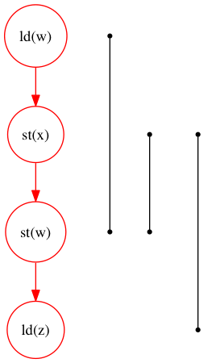
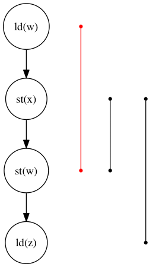

Declarative Fence Insertion
John Bender, Jens Palsberg - UCLA
Mohsen Lesani - MIT
LockOne mutex
The Art of Multiprocessor Programming, 2.3.1
Maurice Herlihy & Nir Shavit, 2012
class LockOne implements Lock { private boolean[] flag = new boolean[2]; public void lock() { int i = ThreadID.get(); int j = i-1; flag[i] = true; while (flag[j]) {} } public void unlock() { int i = ThreadID.get(); flag[i] = false; } }
LockOne mutex
The Art of Multiprocessor Programming, 2.3.1
Maurice Herlihy & Nir Shavit, 2012
class LockOne implements Lock { private boolean[] flag = new boolean[2]; ▲ public void lock() { int i = ThreadID.get(); int j = i-1; flag[i] = true; while (flag[j]) {} } public void unlock() { int i = ThreadID.get(); flag[i] = false; } }
LockOne mutex
The Art of Multiprocessor Programming, 2.3.1
Maurice Herlihy & Nir Shavit, 2012
class LockOne implements Lock { private boolean[] flag = new boolean[2]; public void lock() { ▶ int i = ThreadID.get(); int j = i-1; flag[i] = true; while (flag[j]) {} } public void unlock() { int i = ThreadID.get(); flag[i] = false; } }
LockOne mutex
The Art of Multiprocessor Programming, 2.3.1
Maurice Herlihy & Nir Shavit, 2012
class LockOne implements Lock { private boolean[] flag = new boolean[2]; public void lock() { int i = ThreadID.get(); ▶ int j = i-1; flag[i] = true; while (flag[j]) {} } public void unlock() { int i = ThreadID.get(); flag[i] = false; } }
LockOne mutex
The Art of Multiprocessor Programming, 2.3.1
Maurice Herlihy & Nir Shavit, 2012
class LockOne implements Lock { private boolean[] flag = new boolean[2]; public void lock() { int i = ThreadID.get(); int j = i-1; ▶ flag[i] = true; while (flag[j]) {} } public void unlock() { int i = ThreadID.get(); flag[i] = false; } }
LockOne mutex
The Art of Multiprocessor Programming, 2.3.1
Maurice Herlihy & Nir Shavit, 2012
class LockOne implements Lock { private boolean[] flag = new boolean[2]; public void lock() { int i = ThreadID.get(); int j = i-1; flag[i] = true; ▶ while (flag[j]) {} } public void unlock() { int i = ThreadID.get(); flag[i] = false; } }
LockOne mutex
The Art of Multiprocessor Programming, 2.3.1
Maurice Herlihy & Nir Shavit, 2012
class LockOne implements Lock { private boolean[] flag = new boolean[2]; public void lock() { int i = ThreadID.get(); int j = i-1; ▶ flag[i] = true; ▶ while (flag[j]) {} } public void unlock() { int i = ThreadID.get(); flag[i] = false; } }
good execution
| Thread 0 | Thread 1 |
|---|---|
flag[0] = true |
|
flag[1] : false |
|
flag[1] = true |
|
flag[0] : true |
|
| spin | |
| enter |
bad execution
| Thread 0 | Thread 1 |
|---|---|
flag[0] = true |
|
flag[1] : false |
|
flag[1] = true |
|
flag[0] : true |
|
| spin | |
| enter |
bad execution
| Thread 0 | Thread 1 |
|---|---|
flag[1] : false |
|
flag[1] = true |
|
flag[0] : false |
|
| enter | |
flag[0] = true |
|
| enter |
bad execution
| Thread 0 | Thread 1 |
|---|---|
flag[1] : false |
|
flag[1] = true |
|
flag[0] : false |
|
| enter | |
flag[0] = true |
|
| enter |
traditional solutions
| solutions | lost semantics | error prone | overkill |
|---|---|---|---|
| sequential consistency | ✓ | ✓ | |
volatile modifier |
✓ | ✓ | ✓ |
| memory fences | ✓ | ✓ |
Pragma 2.3.1. In practice, the Boolean flag variables … must all be declared
volatileto work properly.
execution order:
The requirement that two instructions appear to execute in program order.
algorithms = code + orders
class LockOne implements Lock { private boolean[] flag = new boolean[2]; public void lock() { int i = ThreadID.get(); int j = i-1; flag[i] = true; while (flag[j]) {} } public void unlock() { int i = ThreadID.get(); flag[i] = false; } }
+
Enforcing Orders
How do we help implementers use orders?
Fence insertion!
previous approaches
- Insert fences to…
- enforce sequential consistency
- enforce a specification
- Whole program, O(2n)
our approach
- Orders as part of the algorithm
- Insert fences to enforce orders
- Per-procedure
- still O(2n) but inputs are small
Fence Insertion Subtleties
many platforms
void lock() { int i = get_thread_id(); int j = i-1; flag[i] = true; ▶ __asm__ ("mfence"); // x86 ▶ __asm__ ("dmb"); // ARMv7 while (flag[j]) {} }
fence selection
void lock() { int i = get_thread_id(); int j = i-1; flag[i] = true; ▶ __asm__ ("dmb"); ▶ __asm__ ("dmb st"); // may be faster while (flag[j]) {} }
existing fence(-likes)
void lock() { int i = get_thread_id(); int j = i-1; // x86: cmpxchg // ARMv7: ldrex/strex ▶ CAS(flag[i], false, true); while (flag[j]) {} }
TL2 STM Algorithm
... # ifndef TL2_EAGER for (wr = logs; wr != end; wr++) { // write the deferred stores ▶ WriteBackForward(wr); } # endif // make stores visible before unlock MEMBARSTST(); // release locks and increment version DropLocks(Self, wv); ...
TL2 STM Algorithm
... # ifndef TL2_EAGER for (wr = logs; wr != end; wr++) { // write the deferred stores WriteBackForward(wr); } # endif // make stores visible before unlock MEMBARSTST(); // release locks and increment version ▶ DropLocks(Self, wv); ...
TL2 STM Algorithm
... # ifndef TL2_EAGER for (wr = logs; wr != end; wr++) { // write the deferred stores WriteBackForward(wr); } # endif // make stores visible before unlock ▶ MEMBARSTST(); // release locks and increment version DropLocks(Self, wv); ...
code transformations
... # ifndef TL2_EAGER ▶ for (wr = logs; wr != end; wr++) { ▶ // write the deferred stores ▶ WriteBackForward(wr); ▶ } # endif // make stores visible before unlock MEMBARSTST(); // release locks and increment version DropLocks(Self, wv); ...
unnecessary fences
... # ifndef TL2_EAGER for (wr = logs; wr != end; wr++) { // write the deferred stores WriteBackForward(wr); } # endif // make stores visible before unlock ▶ MEMBARSTST(); // release locks and increment version DropLocks(Self, wv); ...
faux order
... # ifndef TL2_EAGER for (wr = logs; wr != end; wr++) { // write the deferred stores WriteBackForward(wr); } # endif // make stores visible before unlock ▶ MEMBARSTST(); // release locks and increment version DropLocks(Self, wv); ...
Algorithm
def Insert(G1, A, O1): O2 = O1 \ Elim(G, A, O1) K = Cut(G1, O2) G2 = Refine(G1, K) return G2 end

control flow graph
def Insert(G1, A, O1): ▲ O2 = O1 \ Elim(G, A, O1) K = Cut(G1, O2) G2 = Refine(G1, K) return G2 end

architecture spec
def Insert(G1, A, O1): ▲ O2 = O1 \ Elim(G, A, O1) K = Cut(G1, O2) G2 = Refine(G1, K) return G2 end
orders
def Insert(G1, A, O1): ▲ O2 = O1 \ Elim(G, A, O1) K = Cut(G1, O2) G2 = Refine(G1, K) return G2 end

order elimination
def Insert(G1, A, O1): ▶ O2 = O1 \ Elim(G, A, O1) K = Cut(G1, O2) G2 = Refine(G1, K) return G2 end

order elimination
def Insert(G1, A, O1): ▶ O2 = O1 \ Elim(G, A, O1) K = Cut(G1, O2) G2 = Refine(G1, K) return G2 end

fence position
def Insert(G1, A, O1): O2 = O1 \ Elim(G, A, O1) ▶ K = Cut(G1, O2) G2 = Refine(G1, K) return G2 end

fence position
def Insert(G1, A, O1): O2 = O1 \ Elim(G, A, O1) ▶ K = Cut(G1, O2) G2 = Refine(G1, K) return G2 end

fence position
def Insert(G1, A, O1): O2 = O1 \ Elim(G, A, O1) ▶ K = Cut(G1, O2) G2 = Refine(G1, K) return G2 end

fence placement
def Insert(G1, A, O1): O2 = O1 \ Elim(G, A, O1) K = Cut(G1, O2) ▶ G2 = Refine(G1, K) return G2 end

fence placement
def Insert(G1, A, O1): O2 = O1 \ Elim(G, A, O1) K = Cut(G1, O2) ▶ G2 = Refine(G1, K) return G2 end

main theorem
\(\mathsf{Insert}(G, A, O), A \vDash O\)
Results/Parry
benchmark: classic algorithms
- from Algave et al '14
- x86 and ARMv7
- 4 lock free algorithms
benchmark: STM algorithms
- TL2/TL2 Eager
- Rochester ByteEager (TLRW)
- x86 and ARMv7
- compared with hand placed fences (baseline)
- fence placement and count
- STAMP performance benchmarks
tl2 - ARMv7
TxStore |
baseline | ours |
| 1886 \(\xrightarrow{ld,ld}\) 1923 | 1920: dmb |
1886: dmb |
tl2 eager - ARMv7
TxCommit |
baseline | ours |
| 760 \(\xrightarrow{st,st}\) 1413 | 1669: dmb st |
— |
rstm - ARMv7
read_rw |
baseline | ours |
| 163 \(\xrightarrow{st,ld}\) 165 | 163: ldrex/strex |
163: dmb st |
tl2 performance

rstm performance

algorithms = code + orders
- Describe the algorithm behavior
- Let the compiler enforce the orders